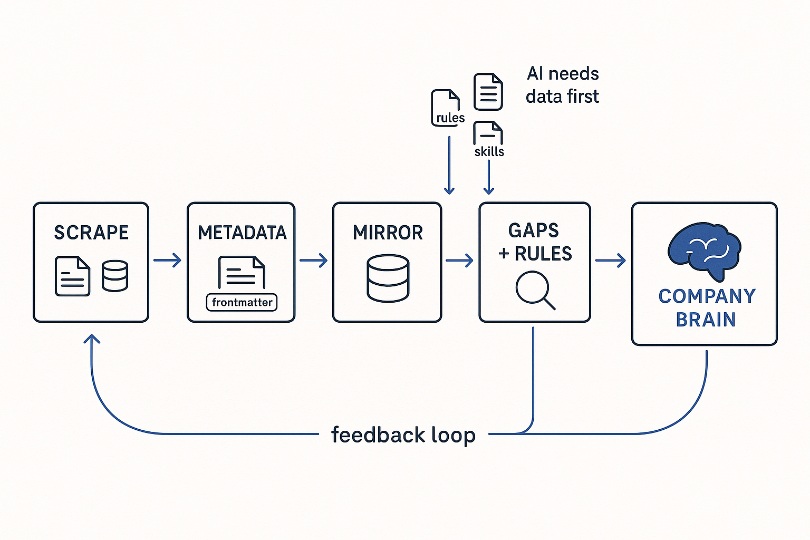

Signature principle
The end-to-end BTM method: turn existing company information — hidden in PowerPoints, Confluence, SQL and reports — into organized metadata, mirror it in a fast database, enrich it with AI, and serve it as a queryable company brain.

The BTM pipeline is the method seen as one flow, from scattered reality to a living, queryable brain. Most of what an organization knows is already written down — but it’s trapped in PowerPoints, Confluence pages, SQL transformations, data models, table structures and reports, where no machine and few humans can reason over it. The pipeline is how that raw material becomes structure. The stages chain together. Capture: scrape existing information into metadata — markdown with frontmatter, folder-per-unit — and analyze the existing SQL and transformations into the same standard format. Mirror: load it as a mirror in a fast database like DuckDB. Enrich: hunt for gaps, inconsistencies and rules, then run AI-driven interviews with the stakeholders the documentation and code check-ins reveal, adding explanatory metadata. Serve: optimize and enrich, build spaced-repetition training so new people gain the skills, expose MCP servers so users and systems can ask the company brain questions — while everything is logged and git-versioned, so you see how the brain develops over time and keep the lineage back to every source. The differentiator is that the whole pipeline can be generated from instructions derived from existing solutions — a reusable, teachable skill set. That is the offering: not a one-off project, but a repeatable method for turning any organization’s buried knowledge into a company brain.
← All concepts & vocabulary